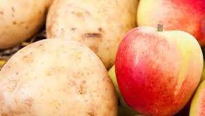
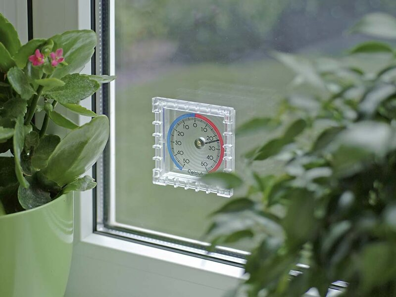

aby skutecznie sie przygotowac bedziesz potrzebowac
musisz pamietac o ponizszych:
mama kupia 1,5kg jablek i 2kg ziemniakow, a babcia 2 razy wiecej jablek niz mama i 0,5kg ziemniakow mniej
Czyje zakupy byly ciezsze?
| OSOBA | PRODUKTY: | Razem: | |
|---|---|---|---|
| jablka | ziemniaki | ||
| mama | 1,5kg | 2kg | 3,5kg |
| babcia | 3kg | 1,5kg | 4,5kg |
Pewnego dnia rano temperatura wynosila 16°C. W poludnie o 6°C cieplej niz rano, a wieczorem temperatura byla o 8°C nizsza niz w poludnie
Jaka temperature pokazywal termometr w poludnie, a jaka wieczorem?
